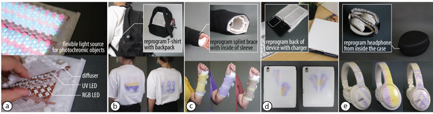

DOI PDF Video Slides Code Videos
Press
- MIT News
- MIT CSAIL News
- Hackster.io
- Interesting Engineering
- Yahoo News
- MSN Tech News
- 3DDruck (German)
- Glabcom Device News (Ukrainian)
- TNNT Tech News (Thai)
- PC News (Russian)
- JST Global (Japanese)


PortaChrome: A Portable Contact Light Source for Integrated Re-Programmable Multi-Color Textures

Figure 1: (a) PortaChrome is a flexible contact light source that can reprogram the appearance of an object previously coated with photochromic material. PortaChrome has integrated UV and RGB LEDs that saturate and desaturate the color channels of photochromic material. PortaChrome is portable and flexible, allowing it to be attached to (b) a backpack to reprogram the back of clothes, (c) the inside of a sleeve to reprogram a splint brace, (d) a wireless charger to reprogram the back of a device, and (e) the inside of a headphone case to reprogram the design of a headphone.
In this paper, we present PortaChrome, a portable light source that can be attached to everyday objects to reprogram the color and texture of surfaces that come in contact with them. When PortaChrome makes contact with objects previously coated with photochromic dye, the UV and RGB LEDs inside PortaChrome create multicolor textures on the objects. In contrast to prior work, which used projectors for the color change, PortaChrome has a thin and flexible form factor, which allows the color change process to be integrated into everyday user interaction. Because of the close distance between the light source and the photochromic object, PortaChrome creates color textures in less than 4 minutes on average, which is 8 times faster than prior work. We demonstrate PortaChrome with four application examples, including data visualizations on textiles and dynamic designs on wearables.
INTRODUCTION
An important step towards achieving the vision of "The Ultimate Display" is to augment the surfaces of objects with display capabilities, such as changing their color and visual texture, through novel display fabrication methods (DisplayFab). This capability has initiated new application opportunities, allowing users to fit multiple designs on personal items such as phone cases and shoes and to display relevant information in the daily environment, such as showing a calendar on a mug.
Researchers have developed systems with color-changing materials to augment object surfaces with display capabilities. For example, electrochromic and thermochromic systems enable the transition between predefined color phases. Recently, researchers expanded the color gamut and allowed reprogrammable textures using photochromic dyes (Photo-Chromeleon). By spraying a mixture of cyan, magenta, and yellow photochromic dyes on an object and projecting light patterns of specific wavelengths to saturate and desaturate individual color channels, the resulting photochromic object achieves high-resolution multicolor textures that are fully reprogrammable.
One limitation of a projector system for reprogrammable surfaces is that it has to be set up at a distance from the object to induce color change, limiting the types of interactions that can leverage texture reprogramming. More portable light sources enable new ways to interact with photochromic material. For example, researchers of photochromic systems have considered portable light sources to integrate color change into users’ everyday interaction, such as integrating a UV LED matrix into shoes to allow reprogramming the carpet while walking (PhotochromicCarpet).
However, the portable light sources used in photochromic systems so far have only supported single-color textures. To enable multicolor textures, light sources do not only require UV wavelength for saturation but also RGB wavelengths for individually desaturating each color channel. In addition, the portable light source used in existing photochromic systems has been rigid (e.g., rigid UV LED matrices) and thus limited the color change to flat surfaces. To enable multicolor textures on curved surfaces, such as on the curved headpiece of a pair of headphones, a flexible light source that can conform to the curved surface and has both RGB and UV wavelengths is needed. Existing flexible displays, such as commercial OLED displays, contain RGB wavelengths, which are necessary to desaturate the photochromic dyes, but are missing the UV wavelength required for saturation.
In this paper, we present PortaChrome: a flexible and portable light source that supports reprogrammable multicolor texture on photochromic objects (Figure 1). With a thickness of 6mm, PortaChrome can be embedded into surfaces that come in contact with photochromic objects, integrating the texture reprogramming process into the user’s everyday interactions. This enables applications such as visualizing the user’s heart rate on the back of a T-shirt the user is wearing while hiking with a PortaChrome-augmented backpack (Figure 1b), matching the color of a splint brace with the user’s everyday outfit with a PortaChrome embedded inside the user’s sleeves (Figure 1c), displaying exercise progress with PortaChrome attached to a wireless charger (Figure 1d), and switching the design of a headphone with PortaChrome integrated into the headphone casing (Figure 1e). We accomplish this by making flexible panels of RGB and UV LEDs on a textile substrate and using a silicone structure to distribute the light evenly on the surface of the object in contact. Our system also reprograms the color of an object in under 4 minutes on average, which is 8 times faster than prior work.
In summary, we contribute:
- A fabrication method to create a flexible and portable contact light source made from UV and RGB LEDs on a textile substrate that can be attached to everyday objects to reprogram photochromic objects that are in contact;
- A developer tool for specifying the desired color pattern and an algorithm that computes the time of light exposure of each wavelength on each pixel to achieve the desired pattern;
- A technical evaluation showing that our approach based on a flexible contact light source leads to an 8 times speed increase (4 minutes on average vs. 32 minutes) in texture transfer time;
- Four applications that showcase PortaChrome’s capability to reprogram object appearance through everyday interaction, including data visualizations on textiles and personalized designs on wearables.
PORTACHROME
Figure 2: PortaChrome integrates the texture reprogramming process into everyday user interaction: (a) an object treated with photochromic material; (b) PortaChrome can be mounted on the surface of another object that comes in contact with the photochromic object; (c) PortaChrome reprograms the photochromic object while being in contact with it; (d) the photochromic object can be reprogrammed to display different patterns.
Integrated Color-Changing Process
PortaChrome can be embedded in everyday objects, thereby integrating the texture reprogramming process into everyday user interactions. PortaChrome is designed to be embedded into an object and then reprogram the color of another object previously coated with photochromic dye through direct contact. Figure 2 shows this in more detail, i.e. in Figure 2a an object is treated with photochromic dye, allowing its color to be later reprogrammed with PortaChrome. This object can be the back of a T-shirt, a splint brace, the back of a tablet, and a headphone, as illustrated in the application scenarios. PortaChrome can then be attached to another object that will be in contact with the photochromic object (Figure 2b), such as a backpack, the inside of a sleeve, a wireless charger, and the inside of the casing. When in contact, PortaChrome illuminates UV and RGB light that reprogram the texture of the photochromic object (Figure 2c), allowing the object to display a different texture after programming is completed (Figure 2d).
Unlike previous works that use projectors for multicolor photochromic texture, PortaChrome enables an integrated color-changing process that does not require the user to actively design and initiate the reprogramming. This enables new interactions to create reprogrammable textures, such as data visualization that automatically updates based on sensor data.
PortaChrome Composition
PortaChrome consists of four layers (Figure 3a): (1) a fluorescent textile base layer that filters out the UV light from the UV LEDs to protect the user, (2) a flexible UV LED circuit on a transparent textile for saturating the color of the photochromic dye; (3) a flexible addressable RGB LED circuit on a transparent textile for desaturating the color of the photochromic dye; and (4) a silicone diffusion layer to more evenly distribute the light from the UV and RGB LEDs to their corresponding pixels on PortaChrome's surface.
Figure 3: Structure of PortaChrome: (a) PortaChrome consists of four layers: a textile base layer, an RGB LED textile layer, a UV LED textile layer, and a silicone diffusion layer. (b) The integrated UV and RGB LEDs enable PortaChrome to saturate and desaturate the photochromic coating, thereby programming the surface pixels to a desired target color.
Flexible UV and RGB LED Circuits: PortaChrome incorporates both UV LEDs and addressable RGB LEDs to be able to create multicolor reprogrammable textures. The UV LEDs (WL-SUTW, 0.216W) are responsible for saturating the photochromic dye, turning its color from clear to black. The RGB LEDs (SK6812, 0.3W) then selectively desaturate the cyan, magenta, and yellow (C,M,Y) channels of the dye, changing its color from black to a specific target color. To achieve pixel-level control, each addressable RGB LED corresponds to a single pixel of the saturated color (Figure 3b).
Silicone Diffusing Layer: Because the UV and RGB LEDs are point light sources, they do not provide uniform light intensity across an area. To address this, PortaChrome includes a silicone diffusion layer that distributes light more evenly across each pixel.
UV Protection Layer: PortaChrome only requires low-power UV LEDs to saturate the photochromic dyes because of the close distance to the material. During the reprogramming process, the UV LEDs are oriented towards the object, and thus only reflected light can reach the user. This reflected light is at a wavelength of 365 nm and falls within the UVA spectrum, which falls under ‘blacklight (320-400 nm) [that] does not represent a hazard under normal use conditions.’ To further filter out these low intensity UV light reflections, PortaChrome includes a textile base layer made of fluorescent fabric that absorbs UV light.
DEVICE HARDWARE & FABRICATION
We first analyze the design criteria of the PortaChrome light source and then develop a fabrication method to create the light source on a flexible substrate.
LED Spectrum, Arrangement and Circuit Design
To design the PortaChrome light source, we first chose RGB and UV LEDs compatible with the photochromic dye’s saturation and desaturation wavelengths. Next, we considered the optimal arrangement of the LEDs to create an even light distribution on PortaChrome’s surface. Finally, we designed the LED circuit to avoid voltage drops that would lead to uneven light output.
Figure 4: PortaChrome Fabrication Pipeline: We fabricate the RGB and UV circuit layers by (a-c) laser cutting the conductive traces from copper mesh, (d) soldering the LEDs, and (e-g) transferring the circuit to a textile substrate to (h-j) allow for a translucent and flexible result.
LED Spectrum: To saturate the photochromic dyes, we chose UV LEDs (WL-SUTW) with a wavelength of 365nm, which is the same wavelength used in prior work (PhotoChromeleon) and a size large enough for hand-soldering (3.5mm x 2.8mm). To choose an addressable RGB LED that has the wavelengths appropriate for desaturating the CMY color channels of the photochromic dye, we compared different addressable RGB LEDs on the market. We found that they all have similar wavelengths and only differ in housing sizes. We thus chose to use a Neopixel 5050 addressable RGB LED (SK6812), which is large enough for hand-soldering (size: 5mm x 5mm). Figure 5 shows the Neopixel’s LED wavelength spectrum for each color channel together with the absorption spectrum of the CMY color channels of the photochromic dye. It can be seen from the diagram that each LED wavelength is capable of desaturating one color channel with only small overlap on the other two, which allows us to achieve a desired target color by selectively activating the R, G, B LEDs.
Figure 5: LED wavelength spectrum compared with the absorption spectrum of the CMY color channels.
LED Arrangement: LEDs are point light sources, i.e., light leaving the LED forms a cone, which is ultimately seen as a circle on PortaChrome's surface. To ensure the light covers PortaChrome's surface as evenly as possible, we use a hexagonal pixel arrangement rather than a rectangular pixel arrangement. Since placing the UV LEDs directly over the RGB LEDs would obstruct the emitted RGB light, the two types of LEDs cannot be stacked on top of each other. Therefore, we position the UV LEDs on the corners of each hexagon pixel (Figure 6). This arrangement allows each UV LED to saturate its three adjacent pixels. We place the RGB LEDs in the center of each hexagonal pixel, enabling them to individually desaturate the color of their specific pixel without interference from the UV LEDs.
Figure 6: LEDs are placed in a hexagonal arrangement to facilitate even surface light coverage.
LED Circuit: In the circuit, the RGB LEDs are daisy-chained and powered by a 5V supply. The UV LEDs are connected to a 12V supply (Figure 7a). To prevent voltage drop, each UV LED circuit incorporates three LEDs in series, along with a 20-Ohm resistor.
Device Fabrication
Figure 6: LEDs are placed in a hexagonal arrangement to facilitate even surface light coverage.
To fabricate PortaChrome, we laser-cut copper mesh to create flexible conductive traces, solder the LEDs onto the traces, and then adhere the assembled traces to a chiffon fabric using textile glue. Finally, we add a silicone-casted diffusion layer and a UV absorbing fabric to filter out the light from the UV LEDs to protect the user.
Laser Cutting the Circuit and Soldering the LEDs: To construct the LED circuit, we use fiber laser cutting similar to the method used in Fibercuit (model: MFP-B60, laser wavelength: 1064nm, power: 60W). The LED circuit panels are 6cm by 5.5cm in size and each contains 36 LEDs. This is limited by the size of the fiber laser cutter and the speed of manual soldering. The PortaChrome used in the application section is made by connecting 6 panels together to form a larger PortaChrome light source.
We identified four criteria for the material for the circuit: (1) flexibility to conform to different surfaces; (2) low electrical resistance to avoid voltage drop when powering the LED matrix; (3) compatibility with fiber laser cutting; and (4) solderability for electronic assembly. To fulfill these requirements, we use copper mesh (mesh count: 200) as the material for our conductive traces (Figure 4a). Copper mesh is composed of interwoven strands of copper threads, allowing it to conform to a variety of curved surfaces, while having low electrical resistance (0.05-Ohm along a strip of 3mm width and 15cm length), being laser-cuttable and solder-friendly. The mesh count refers to how many holes are in 1 inch of copper mesh and thus how flexible the copper mesh is with mesh counts ranging from 40 (least flexible) to 200 (most flexible) for commercially available copper mesh.
We start by adhering the copper mesh onto a single-side Kapton tape. We then attach the assembly to a ceramic base plate with the copper mesh side facing up before inserting it into the fiber laser cutter to create the traces (Figure 4a/b). We remove any extra material and solder the LEDs directly onto the traces using a heat plate and solder paste (Figure 4c/d). Next, we attach the finished circuit to a transparent chiffon textile substrate using textile glue. For this step, we use a laser-cut paper stencil to limit the glue to only the trace areas and vinyl transfer tape to precisely maintain the shape of the circuit (Figure 4e-g). After creating the flexible textile circuit (Figure 4h-j) for the RGB and UV LED layers, we use a sewing machine to stitch them together with a straight stitch along the two sides of the panels.
Figure 8: Refractive diffuser for LED light distribution: (a) structural design of the diffuser; (b) the diffuser splits light from one UV LED across adjacent pixels and distributes the light from the RGB LED more evenly across one pixel; (c) the diffuser is made from casted silicone with SLA-printed molds.
Silicone Molding the Diffusion Layer: To create the diffusion layer that distributes the light from the LED point light sources more evenly across each PortaChrome pixel, we designed the diffusion structure shown in Figure 8a. Each pixel in the structure is 6mm thick and corresponds to a hexagon pixel of 10mm diameter. Since the UV LEDs are located at the corners of each pixel on PortaChrome's device, we designed the diffusion structure to have sharp edges that allow the incident light to achieve total internal reflection, and thus direct the UV light to 3 adjacent pixels instead of at the corner (Figure 8b). We also designed hexagonal holes in the center of each pixel, preventing the light from the RGB LEDs from creating hot spots by refracting them away from the center of each pixel.
Figure 9: Comparison of the resulting color saturation from our bespoke diffuser instead of setups with no diffuser, a transparent spacer, and a uniform diffuser.
In Figure 9, we compare our diffuser with other diffusion mechanisms of the same 6mm thickness and show its effect on how evenly the color changes on the affected pixel. From left to right: no diffusion (thickness: 0mm) results in center dots as is the expected result when using point light sources for saturation; a transparent spacer cast from silicone (thickness: 6mm) results in uneven color distribution because the UV and RGB LEDs are located in different positions; a generic uniform diffuser created by mixing silicone with 2w% glass balloons (diameter: 50𝜇m) mitigates this issue, but the misalignment between UV saturation and RGB desaturation still results in the pixel being darker in the center than on its edges. In contrast, our diffuser aligns the light from both types of LEDs, yielding pixels with clearer edges and more even saturation within the internal area of each pixel.
Cutting the UV Protection Layer: We include a UV-filtering textile (Model: Rosco #3030, Grid Cloth) as the UV protection layer. To integrate it with the rest of the PortaChrome device, we cut the textile to match the contour of the device and use a sewing machine to stitch it along the edges, securing it beneath the LED layers and the UV protection layer.
USER INTERFACE
We built a control system for PortaChrome, with a control circuit based on the ESP32 microcontroller and a control script developed in Python. The system allows interaction designers to control the PortaChrome light source to reprogram the photochromic object by sending an input color array via Bluetooth. To assist the designer in creating the color array, we also built a design tool (developed in Processing Java) that allows the user to design a desired multicolor texture and simulate the outcome (Appendix). The system is open-source. We will demonstrate how to use the system to complete a texture reprogramming process using the example of changing the color texture on the back of a T-shirt.
Figure 10: The control circuit of the PortaChrome device: (a) control circuit schematics, (b) control circuit and battery.
Control Circuit: We built a control circuit around an ESP32 microcontroller to connect the user interface with the PortaChrome hardware. Figure 10a shows the schematic of this circuit and Figure 10b shows a protoboard implementation of the control circuit connected to a PortaChrome device powered by a commercial portable power bank. The ESP32 listens for Bluetooth signals and initiates texture reprogramming when data is received via Bluetooth from other devices, such as the user’s mobile phone.
Figure 11: PortaChrome’s control script defines and initiates texture reprogramming: (a) control script system diagram with an example of a heart rate and hiking altitude visualization; (b) resulting heart rate visualization on the shirt.
Control Script: To communicate with the control circuit, we developed a control script that takes in a color array, computes the required LED illumination time for each pixel, and sends the required Bluetooth signal to the control circuit to initiate the color change. The color array is stored as a text string of R,G,B#R,G,B#R,G,B where the values represent the saturation of the RGB color channels of the desired color defined on the pixels. The reprogramming.py script computes the time needed to illuminate each LED wavelength to create the specified color array. This illumination array is then sent via Bluetooth to the control circuit, where the control circuit starts the texture reprogramming process to achieve the desired color pattern. In our example, we also support an example data visualization script that converts an array of heart rate and hiking altitude sensor data to the color array that composes the bar chart visualization of the data (Figure 11).
EVALUATION
We evaluate PortaChrome’s texture transfer time, the achievable color gamut, and how well PortaChrome can wrap around surfaces of different angles.
Texture Transfer Speed
Apparatus: To evaluate the color reprogramming time, we measured the time for saturation and desaturation on white ceramic blocks sprayed with photochromic dye of a single color channel. Similar to ChromoUpdate, we spray-coated the samples using an airbrush and mixed the spray paint by adding 0.033w% cyan, 0.033w% magenta, and 0.1w% yellow to Dupli-Color EBSP30000 Glossy Clear Coat spray paint, respectively.
Figure 12: Saturation and desaturation plot for PortaChrome, which provides a 50% time reduction in achieving full saturation for all dyes, and an 87%, 90%, and 84% time reduction for desaturating the cyan, magenta, and yellow channels when compared to previous work.
Procedure: To measure the saturation time for each photochromic dye, we saturate each of the C, M, Y blocks under a 6x6 panel of UV LEDs for 0 to 40 seconds with 5-second intervals. After each 5-second saturation interval, we captured a picture of the sample using a Canon Rebel T6i camera. We color-corrected the pictures with a color checker, and sampled the averaged color of each panel pixel by averaging the hexagon area with a radius of 15 pixels around the area center. We then plotted the normalized average saturation value of all 6x6 panel pixels for each dye.
To measure the desaturation of each photochromic dye, we first saturate each block with UV LEDs for 15 seconds (which the previous evaluation showed is sufficient to fully saturate each dye) and then turn on the R, G, or B lights for 0 to 200 seconds or until the color is fully desaturated. We follow the same procedure as in the saturation experiment by capturing the normalized saturation value of the color-corrected desaturated samples. We repeat this process three times and take the average of the resulting values.
Results: Figure 12 displays the saturation and desaturation curves generated using the PortaChrome light source. In the case of UV LED saturation, yellow reaches full saturation in just 5 seconds, while cyan and magenta take up to 15 seconds, which is still twice as fast as previous work.
The desaturation plots include red, green, and blue LEDs and feature two sets of lines for each color dye under each LED. The lighter lines depict the raw saturation levels, calculated based on the brightness of every individual pixel within each hexagon. Because of the uneven lighting within the photo, this raw data has periodic noise affected by the location of the pixel. To determine the actual time required for desaturation, we smoothed the values normalized with a fully-saturated sample as 1 and a fully-desaturated sample as 0, which are represented by the darker-colored lines in the plot. We compare our desaturation time for each color channel with previous work. In our system, cyan takes 100 seconds to desaturate (previous work: 800s, time reduction: 87%), magenta takes 62 seconds to desaturate (previous work: 620s, time reduction: 90%), and yellow takes 5 seconds to desaturate (previous work: 32s, time reduction: 84%). As a result, in the total reprogramming time from our application scenarios, our system yields on average an 87% faster reprogramming step (4 minutes vs 32 minutes) for the same photochromic dye mixture.
Distributing Lenses Across the 3D Model
Apparatus and Procedure: To evaluate how the PortaChrome light source performs on curved surfaces, we 3D printed PLA blocks with both convex and concave radii of 0cm, 0.5cm, 1cm, 1.5cm, and 2cm and coated them with photochromic dye. We then fixed the PortaChrome light source around each block by clamping it with another block with an inverse geometry, illuminating the blocks with a pattern that had a single white pixel on the curved location. We compared the resulting texture effects to those achieved on a flat plane.
Testing flexibility of PortaChrome light source on curved surfaces of corner radii of 0-2cm.
Result: Figure 13 shows the outcomes of applying the gradient pattern to blocks with varying corner radii. We visually inspected the gradient difference between each object’s gradient pattern in the hinge area with the reference pattern. On blocks with convex geometry, the pixel retains its original shape but the light from the white pixel becomes more diffused. This diffusion occurs as the gaps between adjacent pixels in the diffusing layer come into contact due to the convex shape, allowing white light to permeate through the silicone and spread into neighboring pixels. In concave geometries, the white pixel creates a more discernible hot spot. This is because of the increased gap between pixel units on the diffusion layer, which effectively confines the light around the pixel rather than allowing it to disperse into adjacent pixels.
APPLICATIONS
We next showcase applications of PortaChrome with the example of a data visualization on a textile surface and a personal device, and a wrist splint and a headphone with reprogrammable customized visual appearance.
Visualize Sensor Data on Textiles with Backpack-Wearing
In our first application, we show how PortaChrome can be used to create a data visualization on a textile surface (Figure 14). In this example, we mounted PortaChrome on the inside of a backpack. When the user wears the backpack over a T-shirt previously coated with photochromic dye, the backpack updates the color pattern on the T-shirt while the user wears it.
Figure 14: PortaChrome can be attached to a backpack and create customized patterns on the back of a user’s T-shirt. (a) PortaChrome is sewn onto a backpack powered with a battery pack. (b) PortaChrome reprograms the back of the T-shirt to visualize the user’s hiking trail and heart rate, and displays the number of active minutes spent on this hike.
In this specific example, we create a data visualization of the user’s hiking experience. An altitude sensor and a heart rate sensor send data to the PortaChrome control system, which plots the altitude and heart rate as a data visualization on the T-shirt. Such a portable, contact-based application was not achievable with previous systems, which required projector setups. It is also enabled by PortaChrome’s fast color change, which only took 3 minutes and 52 seconds for the hiking visualization.
Visualize Sensor Data on Back of Device during Wireless Charging
When electronic devices are wirelessly charged, their back surfaces are in contact with the wireless charging station. In this application, we demonstrate that the PortaChrome light source can be embedded into a wireless charging station, which allows it to reprogram the back of the device that is being charged. Figure 15 shows this with an example of a tablet that has its back coated with photochromic dye. In this example, we display the user’s progress toward their weekly workout challenge, where two halves of a heart move closer together and eventually align as the user reaches their weekly workout goal. In this application, each reprogramming step takes only 2 minutes and 21 seconds to complete.
Figure 15: (a) PortaChrome can be attached to a wireless tablet charger and allows the back of the tablet to be reprogrammed while it is charging. (b) The back of this tablet case is reprogrammed to inform the user about their progress toward their weekly workout challenge.
Reprogram a Wrist Splint through Jacket-Wearing
PortaChrome can also be used to visually customize rehabilitation devices, such as wrist splints, which has been shown to increase the adoption of such devices. We demonstrate this concept with the example of a wrist splint, the color of which can be reprogrammed to match the wearer’s daily outfit (Figure 16). By integrating PortaChrome into the sleeves of a jacket, the user can reprogram the texture while wearing the jacket over it. The three colors demonstrated in Figure 16 take 3 minutes 50 seconds, 1 minute 40 seconds, and 1 minute 20 seconds to reprogram, respectively.
Figure 16: (a) PortaChrome can be attached to the inside of the sleeves to (b) reprogram the user’s wrist splint so that it matches the user’s daily outfit.
Customize Headphone in the Headphone Casing
The flexible and portable form factor allows PortaChrome to be integrated into objects' casings, such as the case of a headphone. This allows the user to reprogram the appearance of their headphones by keeping them in their case. Figure 17 shows three different designs that we applied to the headphone by placing it in its case, each taking up to 3 minutes and 52 seconds to complete.
Figure 17: (a) Reprogramming headphone appearances by integrating PortaChrome with the original headphone case. (b) Three headphone designs were achieved with PortaChrome.
IMPLEMENTATION
We next discuss limitations of our approach and avenues for future work.
Automating Fabrication: To allow PortaChrome to conform to different surfaces, it is made from custom flexible circuitry on a textile substrate. In this paper, we present a fabrication technique suitable for fast prototyping using tools available in maker spaces, such as copper tape and a fiber laser, rather than optimizing for professional PCB fabrication. We validated two alternative fabrication methods for the LED circuits: (1) using flexible PCBs in industrial PCB manufacturing, and (2) using flexible LED strips for a DIY-friendly process (Figure 18). We also tried automating the fabrication of the silicone diffusion layer. However, we cannot use SLA 3D printing for the diffusion layer since flexible SLA materials (Formlabs Elastic 50A) absorb UV light at 365nm, making them unsuitable for photochromic saturation. FDM 3D printing with clear TPU (NovaMaker) yields results that are not sufficiently optically transparent.
Figure 18: Alternative methods of fabricating PortaChrome: (1) with a flexible PCB and (2) with RGB and UV LED strips.
Pattern Resolution: The resolution of the reprogrammed pattern with PortaChrome is the same as the resolution of the addressable RGB LEDs on the PortaChrome light source. Since PortaChrome is hand-soldered, the LEDs have to have a certain size to allow for manual work, which limits the resolution. Thus, in its current form, PortaChrome only supports pixels of 8mm diameter, leading to a resolution of approximately 3 PPI (Pixels Per Inch). While the current resolution is low, our fabrication methodology consists of standard manufacturing procedures, such as fiber laser cutting, soldering, and adhering, and thus has the potential to be readily adaptable to industrial manufacturing. Specialized machinery such as pick-and-place systems will allow for the use of electronic components with the same functionality but of smaller package size, such as the SK6805 Addressable RGB LEDs (1.5 x 1.5mm) and the CS63CUV365C UV LEDs (1.6mm x 0.8mm), which can improve the resolution to 8 PPI. To further improve the resolution, we can use integrated electronics, such as the Chip-on-Board technology, to reduce the size of LEDs.
Non-Developable Surface: In order to conform to a non-developable surface, the entire PortaChrome device needs to be either stretchable or customized for specific geometry. While the stretchable textile substrate of PortaChrome allows for wrapping around non-developable surfaces, the rigid electronic components (LEDs) and flexible but non-stretchable circuit traces (copper mesh) currently do not support non-developable surfaces. Once the electronic components and circuit traces become stretchable in the future, the same PortaChrome fabrication workflow that we present in the paper can be used with the new stretchable components to make a device that can be wrapped around non-developable surfaces. Alternatively, researchers in graphics have also shown how to wrap non-developable surfaces with non-stretchable strips (Shape Representation by Zippables). In future works, an editor can be developed to accommodate custom non-developable geometries and generate fabrication files for light sources of different sizes and shapes.
Color Evenness: A core requirement for reprogramming photochromic surfaces is to have controlled irradiation of a surface with RGB and UV light. However, LEDs are approximately point light source which produce the highest light intensity in front of the LED and decreasing light intensities on the sides. To mitigate this uneven distribution, we included a silicone diffusion layer on top of our LED matrix. While this improves the light intensity distribution, it does not lead to a completely even light intensity. In the future, we will explore optimization techniques for customized lenses that further improve light distribution, taking into account the specific emission profile of our LEDs.
Decoupling Activation Electronics with Color-Changing Materials: While electrochromic and electroluminescent materials yield higher frame rates and have lower energy consumption, photochromic materials make it easy to decouple the color-changing material (the photochromic object’s surface) from its activation source (the light source). Separation of the activation source brings several advantages: passive material, such as photochromic dye, is easier to integrate into everyday objects than a full circuit; the modified color-changing object better preserves the original properties of the object, such as its weight, because all electronics are on a separate device; color-change can be made more scalable because the same activation source can be reused on different surfaces. Future research can improve the speed and energy consumption of photochromic color-change by developing brighter and more energy-efficient light sources.
CONCLUSION
We presented PortaChrome, a flexible and portable contact light source for reprogrammable multicolor textures on photochromic objects. To make PortaChrome, we presented the fabrication method to make textile-based layers of UV and RGB LED circuits and a silicone-based diffusing layer to achieve successful pixel images. Because of its flexibility and portability, PortaChrome can be placed in direct contact with the color-changing surface, allowing the light source to be attached to everyday objects and the color-changing process to be embedded in everyday user interaction. We demonstrate the new capabilities with four application examples, including data visualizations on textiles and dynamic designs on wearables.
APPENDIX
PortaChrome Graphic Design Tool
Figure 19: Graphic design tool for PortaChrome texture design: (a) the designer draws their design on the grid pattern, (b) the design tool displays a simulation of the resulting color, (c) the designer saves the color array that corresponds to the pattern, (d) result after running the saved color array with the control script.
While the control system (Section 5) allows the designer to initiate color change through an input color array, which can be generated based on sensor data, we also developed a graphic design tool that allows designers to specify the colors at each pixel location by drawing on a canvas (Figure 19). By clicking the "Turn on Brush" button, the designer can directly draw their design on a panel that displays a 12x18 hexagonal grid representing the pixels on the PortaChrome light source (Figure 19a). As an alternative to creating a design from scratch, the designer can also click the "Add an Image" button to import an image that is subsequently converted to fit the 12x18 pixel resolution PortaChrome currently supports.
Similar to other multicolor photochromic works, PortaChrome can only represent a subset of the CMYK color space due to the inherent limitation in available photochromic inks today. Thus, after creating a design, the designer can click the "Simulate" button to show the closest color achievable using the PortaChrome light source. After simulating the color, the user interface also displays the required texture transfer time (Figure 19b). After finding a satisfactory color pattern, the designer can press the "Save Color Pattern" button to save the current design as a color array, which can be used as input for the control script and subsequently transferred to the photochromic object (Figure 19c).
ACKNOWLEDGEMENTS
We thank Kexin Wang for providing instructions on incorporating photochromic ink on textile, Yiyue Luo for conducting initial tests on diffusive textile patches, and Anthony Pennes for troubleshooting the circuits. We also thank Vivian, Regina, Katherine, Mairin, and Alex for their help with soldering additional electronics. This work is supported by the MIT-GIST Joint Research Program.